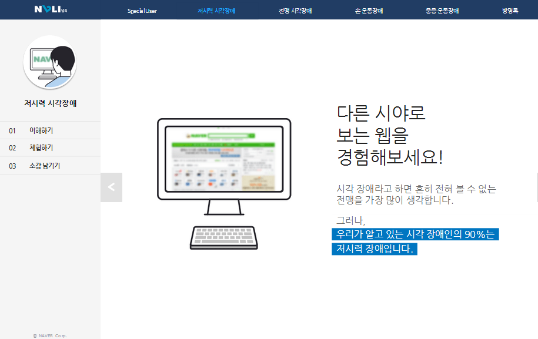
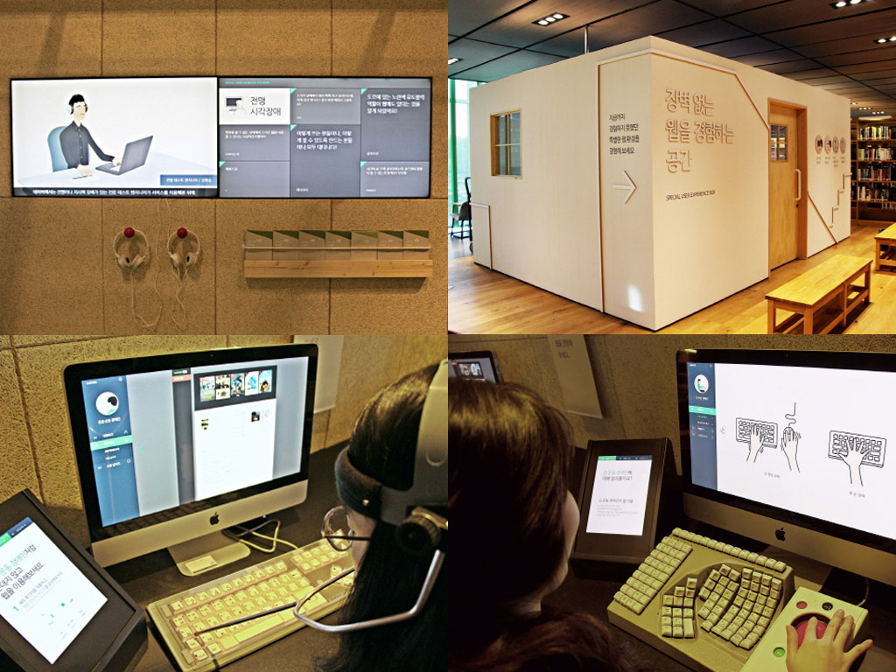
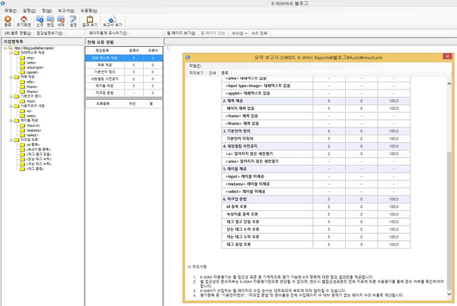
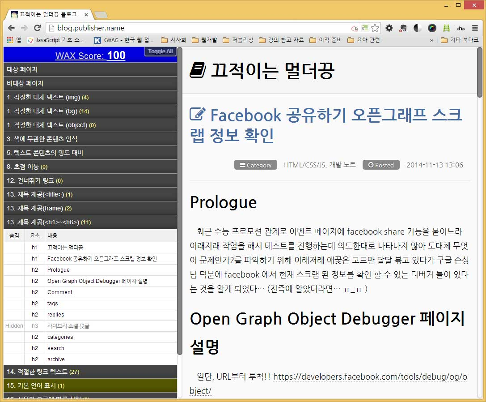
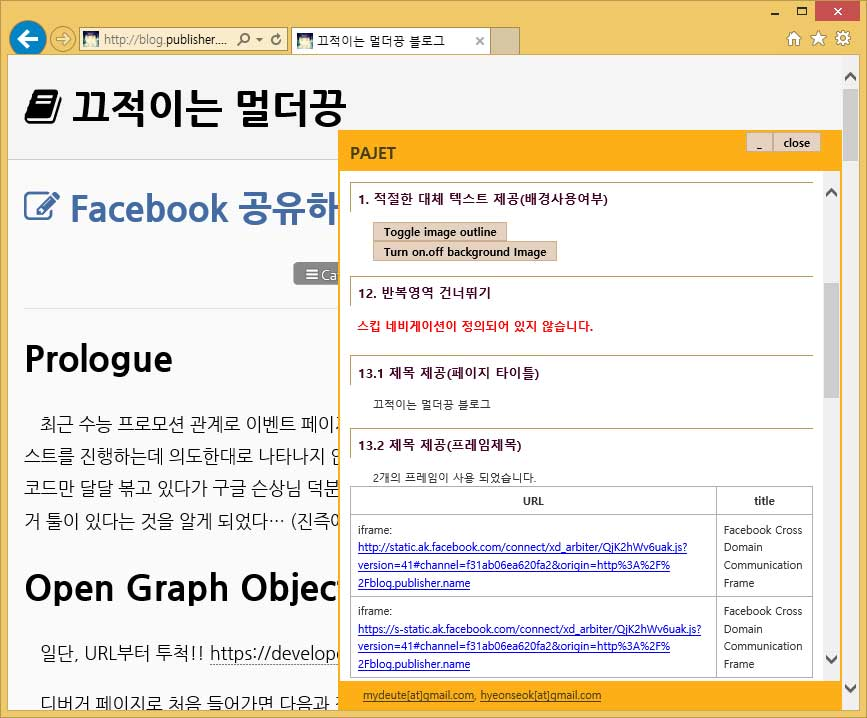

오늘도 a11y 이야기
발표자 소개
웹 접근성
= 인터넷 경사로
a11y
접근성을 어떻게 접근할 것인가?
장애에 대한 이해
각 장애별 웹 이용 방법
내가 그 상황이라면?
상대의 느끼는 바를 함께 느낌
HOW?
내가 만약
볼 수 없다면... 들을 수 없다면... 몸을 움직일 수 없다면...네이버 웹 접근성 체험 부스
네이버 그린팩토리 접근성 체험 부스
한국정보화진흥원 체험관
.hwp.files/bindatas/BIN0002.jpg)
구현
외우려하지 말고 왜 필요한지를 먼저 생각하라
어떻게 사용성을 높일 지를 고민하라
접근성 검사를 업무 프로세스 안으로
접근성 테스트
자동화 툴
K-WAH
OpenWAX / N-WAX
PAJET
자동화 툴에서 통과하면 문제없다?
No!!!쉽지 않은 것은 사실이다.
법적으로 설치하라고 하니까 설치한 거죠
이게 왜 필요한가는,
자기들한테는 의미가 없는 거예요
근데 제가 말하고 싶은 것은 이게 왜 이렇게 설치가 돼 있는지를 알아줬으면 좋겠다.
모두에게 편리한 웹을 위하여!
※ 본 슬라이드의 자세한 발표 내용은 블로그 포스트 - 오늘도 a11y 이야기에서 확인 가능합니다.